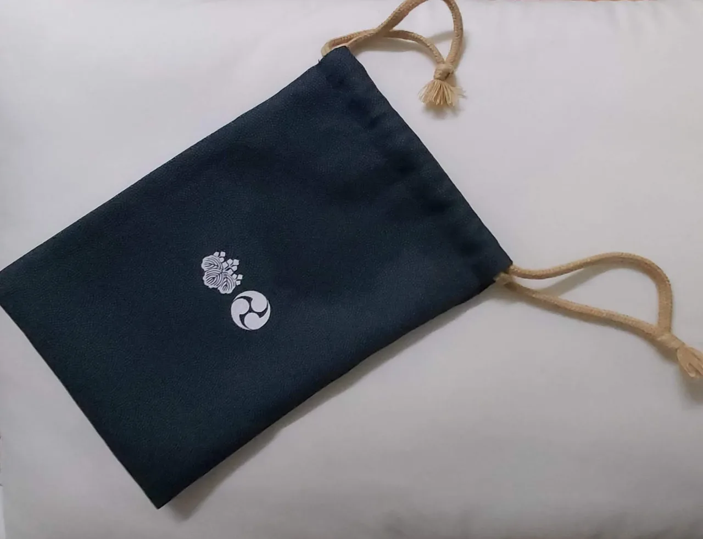
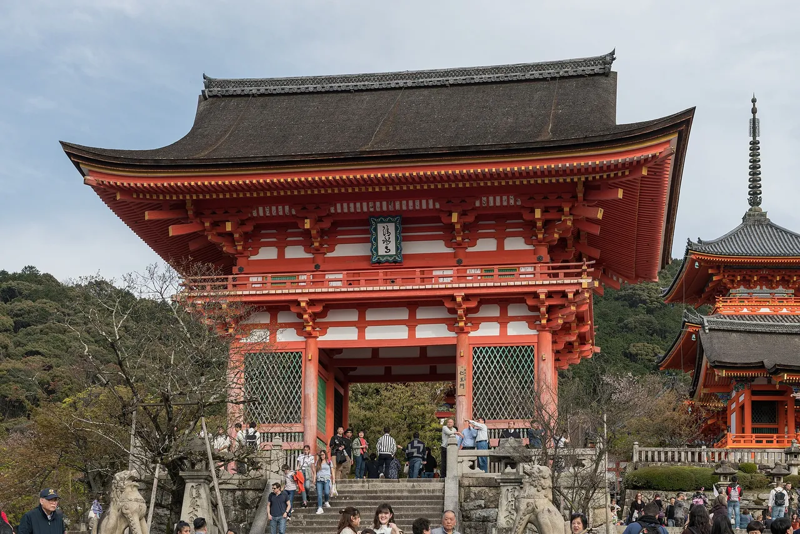

Goshuin: stempel kuil & kuil Shinto Jepang, dijelaskan
Di ribuan kuil Shinto dan kuil Buddha di seluruh Jepang, Anda dapat menerima goshuin (御朱印) — segel unik yang dikuas dengan tangan menggunakan tinta hitam dan dicap dengan warna merah vermilion, sebagai catatan bahwa Anda telah datang dan memberi penghormatan. Dalam bahasa Inggris sering disebut "stempel," namun ini bukan suvenir atau tanda stamp-rally: ini adalah catatan ibadah yang sakral. Panduan ini menjelaskan apa itu goshuin, buku goshuincho tempat Anda mengumpulkannya, cara menerimanya dengan hormat, etiket yang paling penting, dan bahasa Jepang yang akan Anda gunakan di loket.

Apa itu goshuin
Kata goshuin (御朱印) secara harfiah berarti "segel merah yang terhormat." Dalam praktiknya, setiap goshuin menggabungkan dua hal: cap tinta merah — nama dan lambang kuil Shinto atau kuil Buddha, dicap dengan warna vermilion — dan kaligrafi hitam yang dikuas dengan tangan yang mencantumkan nama tempat serta tanggal kunjungan Anda. Karena kaligrafinya ditulis langsung untuk Anda di tempat, tidak ada dua goshuin yang benar-benar sama, bahkan dari tempat yang sama pada hari yang berbeda.
Yang paling penting adalah apa yang dimaksud oleh goshuin. Goshuin diterima di kuil Shinto atau kuil Buddha sebagai catatan dan bukti kunjungan serta ibadah Anda — secara historis terkait dengan tindakan mempersembahkan salinan sutra atau doa. Goshuin diperlakukan sebagai benda sakral, bukan barang koleksi biasa. Anda mungkin pernah melihat panduan berbahasa asing yang menggambarkan pengumpulan goshuin sebagai "stamp rally," namun framing tersebut melewatkan inti persoalan dan bisa terkesan tidak hormat: segel ini mengikuti ibadah, bukan menggantikannya. Siapa pun dapat menerimanya tanpa memandang kebangsaan atau agama, selama Anda berkunjung dengan semangat tersebut dan memberi penghormatan terlebih dahulu.
Buku goshuincho
Anda mengumpulkan goshuin dalam sebuah goshuincho (御朱印帳), yaitu buku yang terbuat dari satu lembar panjang yang dilipat seperti akordeon sehingga terbuka menjadi rangkaian kertas tebal yang berkesinambungan. Setiap halaman menampung satu goshuin yang dikuas langsung di atasnya. Banyak kuil Shinto dan kuil Buddha menjual goshuincho dengan desain mereka sendiri yang indah, sehingga buku itu sendiri menjadi kenang-kenangan dari tempat-tempat yang telah Anda kunjungi.
Satu aturan kesopanan yang diam-diam penting: gunakan goshuincho hanya untuk goshuin. Buku ini bukan buku catatan umum atau buku tanda tangan — menggunakannya untuk stempel wisata, sketsa, atau tulisan lain dianggap tidak menghormati catatan sakral yang tersimpan di dalamnya. Jika Anda ingin mengumpulkan stempel turis atau stasiun biasa, bawalah buku terpisah untuk itu.
Cara menerimanya dengan hormat
Menerima goshuin itu mudah begitu Anda mengetahui urutannya — dan urutan itu penting, karena ibadah harus dilakukan sebelum segel diberikan. Berikut adalah alur yang biasa dilakukan.
| # | Langkah | Yang harus dilakukan |
|---|---|---|
| 1 | Bawa atau beli goshuincho | Bawa buku Anda sendiri, atau beli di kuil Shinto/kuil Buddha — banyak yang menjual desain mereka sendiri (~¥1.500–3.000). |
| 2 | Siapkan uang tunai, idealnya uang pas | Persembahannya biasanya sekitar ~¥300–500. Kebanyakan tempat hanya menerima uang tunai dan menghargai uang pas. |
| 3 | Beribadah terlebih dahulu di aula utama | Beri penghormatan dengan benar di aula utama sebelum meminta goshuin. Langkah ini adalah alasan utama segel ini ada. |
| 4 | Pergi ke loket | Temukan kantornya: di kuil Shinto ada 授与所 (juyosho) atau 社務所 (shamusho), biasanya di dekat tempat penjualan jimat omamori. |
| 5 | Buka buku dan serahkan | Buka goshuincho Anda ke halaman yang bersih, serahkan dalam keadaan terbuka, dan ucapkan "Goshuin o onegaishimasu." |
| 6 | Tunggu dengan tenang saat dikerjakan | Penulis mengkuasnya dengan tangan — tetap tenang dan jangan berkerumun atau merekam mereka tanpa izin. |
| 7 | Bayar biaya dan terima dengan hormat | Bayar persembahannya dan terima buku Anda kembali dengan kedua tangan disertai sedikit membungkuk. Saat ramai, Anda mungkin mendapat nomor antrian, atau goshuin yang sudah ditulis sebelumnya (書き置き / kakioki) sebagai gantinya. |
Etiket yang penting
Kuil Shinto dan kuil Buddha adalah tempat ibadah terlebih dahulu, baru kemudian tempat berfoto. Etiket di bawah ini adalah yang membuat goshuin tetap menjadi praktik yang disambut baik oleh para pengunjung — dan yang membedakan pengumpulan yang penuh hormat dari perlakuan terhadap tempat-tempat sakral sebagai permainan poin.
- Berdoa terlebih dahulu. Beri penghormatan di aula utama sebelum pergi ke loket. Goshuin adalah catatan ibadah, jadi jangan lewatkan ibadahnya.
- Bawa uang tunai, idealnya uang pas. Kebanyakan loket hanya menerima uang tunai dan persembahannya biasanya sekitar ~¥300–500. Mencari-cari uang kembalian di loket yang sibuk akan membuat semua orang menunggu.
- Tetap tenang saat dikuas. Penulis sedang berkonsentrasi pada kaligrafi yang dibuat khusus untuk Anda — jaga suara Anda tetap rendah dan jangan membungkuk ke atas meja.
- Minta izin sebelum memotret penulis. Merekam tangan yang sedang bekerja tanpa izin adalah tindakan yang mengganggu; ucapan "shashin ii desu ka?" yang tenang sangat membantu.
- Gunakan buku hanya untuk goshuin. Goshuincho bukan buku catatan umum — simpan stempel wisata dan sketsa di tempat lain.
- Anggap ide buku terpisah sebagai kesopanan, bukan aturan mutlak. Baik kuil Shinto maupun kuil Buddha menawarkan goshuin dan tidak ada aturan universal yang memaksa penggunaan buku terpisah. Banyak kolektor menyimpan satu buku untuk kuil Shinto dan satu untuk kuil Buddha, dan beberapa kuil Buddha lebih suka tidak mencampurnya — tetapi ini adalah kesopanan umum, bukan larangan mutlak.
Satu catatan praktis lagi: goshuin tidak dijamin tersedia setiap saat. Selama upacara, festival, atau saat kantor kekurangan staf, suatu tempat mungkin menghentikan penulisan tangan dan hanya menawarkan kakioki (書き置き) yang sudah ditulis sebelumnya, atau tidak sama sekali. Itu hal yang wajar — terimalah apa pun yang ditawarkan dengan lapang dada.
Organisasi pariwisata nasional Jepang (JNTO) menyediakan penjelasan yang jelas dan penuh hormat tentang pengumpulan goshuin di kuil Shinto dan kuil Buddha — termasuk cara kerja praktik ini dan cara mendekatinya dengan sopan. Gunakan sebagai referensi resmi, lalu kembali ke sini untuk panduan langkah demi langkah dan frasa bahasa Jepang.
Tempat-tempat terkenal untuk goshuin

Hampir semua kuil Shinto atau kuil Buddha yang memiliki kantor dapat menawarkan goshuin, jadi Anda tidak memerlukan daftar khusus — tetapi tempat-tempat terkenal berikut ini adalah titik awal yang mudah, masing-masing dengan desainnya sendiri. (Tempat-tempat itu sendiri besar dan mudah ditemukan; framing "goshuin yang indah" lebih bersifat lunak, karena desain berganti dan edisi terbatas datang dan pergi.)
| Tempat | Kota · Prefektur | Wilayah | Mengapa terkenal | Panduan gratis |
|---|---|---|---|---|
| Sensōji浅草寺 | Asakusa, Tokyo | Kanto | Kuil Buddha tertua dan paling ikonik di Tokyo — goshuin pertama yang klasik | Tokyo → |
| Meiji Jingū明治神宮 | Shibuya, Tokyo | Kanto | Kuil Shinto besar yang dikelilingi hutan; goshuin pertama yang populer di ibu kota | Tokyo → |
| Kawagoe Hikawa Shrine川越氷川神社 | Kawagoe, Saitama | Kanto | Dikenal dengan goshuin musiman dan terbatas yang berwarna-warni | Saitama → |
| Tsurugaoka Hachimangū鶴岡八幡宮 | Kamakura, Kanagawa | Kanto | Kuil Shinto bersejarah di jantung wisata Kamakura | Kanagawa → |
| Hase-dera長谷寺 | Kamakura, Kanagawa | Kanto | Kuil Buddha yang indah dengan Kannon raksasa, berjarak pendek dari Buddha Agung | Kanagawa → |
| Kiyomizu-dera清水寺 | Kyoto, Kyoto | Kansai | Kuil Buddha Warisan Dunia UNESCO; salah satu tempat goshuin yang paling banyak dikunjungi di Jepang | Kyoto → |
| Fushimi Inari Taisha伏見稲荷大社 | Kyoto, Kyoto | Kansai | Kuil Shinto dengan seribu gerbang torii vermilion | Kyoto → |
| Yasaka Jinja八坂神社 | Kyoto, Kyoto | Kansai | Kuil Shinto pusat Gion, mudah digabungkan dalam jalan-jalan di Higashiyama | Kyoto → |
Jangan berasumsi goshuin selalu tersedia di tempat mana pun yang disebutkan: selama upacara atau hari festival yang ramai, suatu tempat mungkin menghentikan penulisan tangan atau hanya memberikan kertas kakioki yang sudah ditulis sebelumnya. Tanyakan di loket pada hari itu, dan perlakukan apa pun yang Anda terima sebagai catatan kunjungan tersebut.
Goshuin terbatas & musiman, dan "goshuin girls"
Selain desain standar, banyak kuil Shinto dan kuil Buddha menerbitkan goshuin terbatas atau musiman (限定 / gentei) — edisi khusus yang terkait dengan Tahun Baru, festival, musim bunga sakura, atau dedaunan musim gugur. Goshuin ini sangat diminati para kolektor, kadang lebih rumit dan sedikit lebih mahal, dan menjadi alasan besar mengapa orang kembali ke tempat yang sama sepanjang tahun.
Selama satu dekade terakhir, pengumpulan goshuin juga menjadi hobi yang terlihat di kalangan pengunjung muda — kadang disebut goshuin girls (御朱印ガール) — yang berbagi buku dan desain musiman mereka di media sosial. Kami menganggap framing tren ini sebagai kepercayaan menengah daripada statistik yang pasti, tetapi memang menangkap sesuatu yang nyata: praktik ini telah meluas jauh melampaui peziarah yang lebih tua, dan desain musiman menyebar cepat secara daring. Meski begitu, etiketnya tidak berubah mengikuti audiens — berdoa terlebih dahulu, dan perlakukan segel sebagai catatan ibadah, bukan sekadar konten.
Beberapa tautan di atas adalah tautan afiliasi. Kami mungkin mendapat komisi tanpa biaya tambahan bagi Anda. Kami hanya mencantumkan layanan yang akan kami gunakan sendiri.
Bahasa Jepang yang sebenarnya akan Anda gunakan
Beberapa kata di loket membuat seluruh pertukaran menjadi lebih lancar — dan menandakan bahwa Anda memahami apa itu goshuin.
| Bahasa Jepang | Cara baca | Arti |
|---|---|---|
| 御朱印 | goshuin | segel yang dikuas dengan tangan — catatan kunjungan dan ibadah Anda |
| 御朱印帳 | goshuincho | buku lipat akordeon tempat Anda mengumpulkan goshuin |
| 神社 | jinja | kuil Shinto |
| お寺 | otera | kuil Buddha |
| 参拝 | sanpai | ibadah / memberi penghormatan — langkah yang harus dilakukan terlebih dahulu |
| 授与所 | juyosho | loket tempat goshuin dan jimat diberikan |
| 初穂料 | hatsuhoryo | persembahan adat untuk goshuin (istilah yang penuh hormat — Anda mungkin juga hanya melihat harga yang tertera) |
| 書き置き | kakioki | goshuin kertas yang sudah ditulis sebelumnya, diberikan saat penulisan tangan tidak memungkinkan |
| 限定 | gentei | "terbatas" — goshuin khusus musiman atau edisi acara tertentu |
Ingin kata-kata ini mudah diingat? Kuis pertempuran JLPT gratis melatih kosakata perjalanan dan budaya seperti ini dengan pengulangan berjarak.
Goshuin secara alami berpadu dengan perburuan berbasis tempat lainnya: 100 Kastil & stempel gojoin mereka → (setara goshuin untuk kastil), ziarah anime (seichi junrei) →, dan Pokéfuta (penutup got Pokémon) →. Banyak wisatawan menggabungkan beberapa di antaranya dalam satu prefektur yang sama.
Pertanyaan umum
T. Apa itu goshuin?
J. Goshuin (御朱印, "segel merah yang terhormat") adalah segel asli yang dikuas dengan tangan yang Anda terima di kuil Shinto atau kuil Buddha sebagai catatan dan bukti kunjungan serta ibadah Anda. Goshuin menggabungkan cap tinta merah — nama dan lambang tempat tersebut — dengan kaligrafi hitam tulisan tangan berisi nama dan tanggal kunjungan Anda. Goshuin diperlakukan sebagai benda sakral, bukan suvenir.
T. Berapa biaya goshuin?
J. Persembahannya biasanya sekitar ¥300–500, kadang hingga sekitar ¥1.000, dengan desain terbatas atau musiman yang lebih mahal. Kebanyakan tempat hanya menerima uang tunai dan menghargai uang pas. Perlakukan sebagai persembahan daripada harga tetap, dan periksa apa yang tertera di loket.
T. Apakah pengunjung asing bisa mendapatkan goshuin?
J. Ya. Siapa pun dapat menerimanya tanpa memandang kebangsaan atau agama, selama Anda berkunjung dengan hormat dan memberi penghormatan di aula utama terlebih dahulu.
T. Di mana saya bisa membeli goshuincho?
J. Banyak kuil Shinto dan kuil Buddha menjual goshuincho mereka sendiri di loket (juyosho atau shamusho), sering dengan desain mereka sendiri, biasanya sekitar ¥1.500–3.000. Anda juga bisa membelinya terlebih dahulu di toko alat tulis atau kuil Buddha yang lebih besar dan membawanya.
T. Bagaimana cara meminta goshuin?
J. Beribadah di aula utama terlebih dahulu, lalu pergi ke loket, buka goshuincho Anda ke halaman yang bersih, serahkan dalam keadaan terbuka, dan ucapkan "Goshuin o onegaishimasu." Tunggu dengan tenang saat dikuas, lalu bayar biayanya dan terima buku dengan kedua tangan.
T. Apakah boleh mencampur goshuin kuil Shinto dan kuil Buddha dalam satu buku?
J. Tidak ada aturan universal yang memaksa penggunaan buku terpisah — baik kuil Shinto maupun kuil Buddha menawarkan goshuin. Banyak kolektor menyimpan satu buku untuk kuil Shinto dan satu untuk kuil Buddha sebagai kesopanan, dan beberapa kuil Buddha lebih suka tidak mencampurnya, tetapi ini adalah praktik umum, bukan larangan mutlak.
T. Mengapa goshuin lebih dari sekadar suvenir?
J. Goshuin adalah catatan ibadah yang sakral, secara historis terkait dengan persembahan salinan sutra atau doa di kuil Buddha atau kuil Shinto. Segel ini mengikuti tindakan memberi penghormatan — tidak menggantikannya — itulah mengapa dianggap tidak hormat jika memperlakukan pengumpulan goshuin sebagai stamp rally atau melewatkan ibadah.